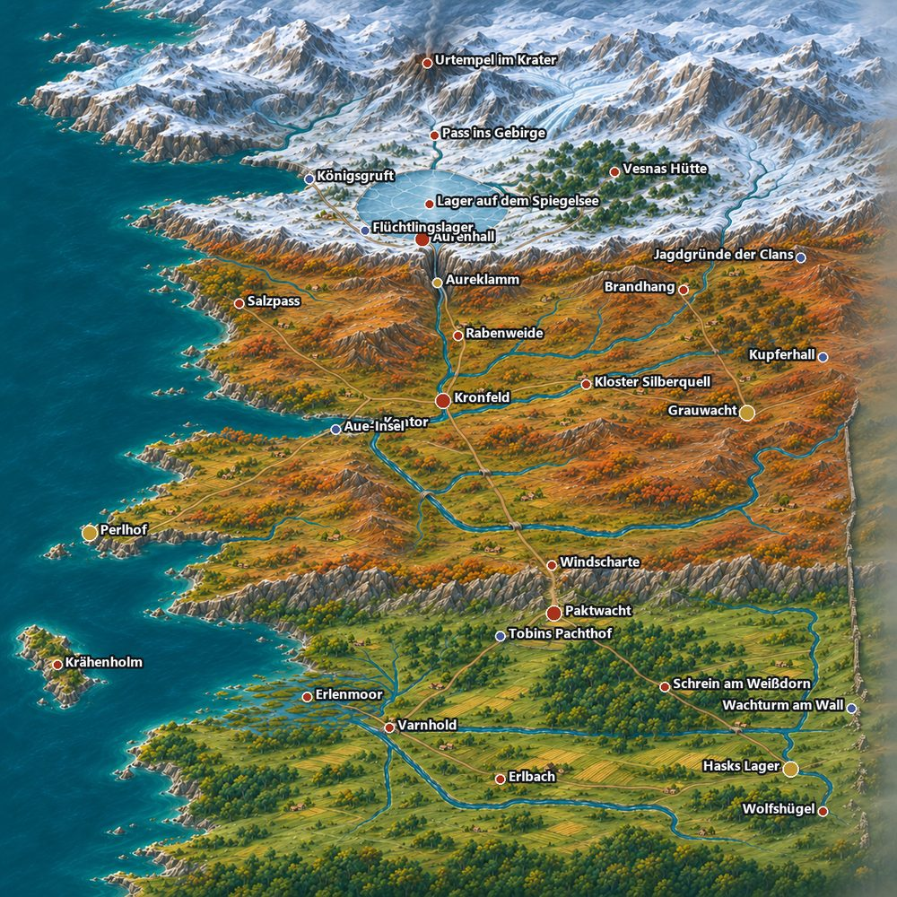

<title>Valmora Kartenkonzept</title>
<meta name="claude:viewport-fit-sides" content="cover">
<link rel="stylesheet" href="https://fonts.googleapis.com/css2?family=Alegreya:wght@500;700&family=Source+Sans+3:wght@400;600&display=swap">
<style>
/* Layout: one reading column, the map is the anchor, tables follow regions from south to north. */
:root{--bg:#F4F6F5;--fg:#1F2A2E;--muted:#55666C;--line:#C9D3D2;--panel:#E8EDEC;--accent:#A5481E;--ok:#2F6D4F;--warn:#8A5A0B;--display:"Alegreya",Georgia,serif;--body:"Source Sans 3","Segoe UI",sans-serif}
@media (prefers-color-scheme:dark){:root:not([data-theme="light"]){--bg:#151C1F;--fg:#E5ECEB;--muted:#9BADB1;--line:#35454A;--panel:#1F2A2E;--accent:#E68A5C;--ok:#7CC6A1;--warn:#E3B45E;color-scheme:dark}}
:root[data-theme="dark"]{--bg:#151C1F;--fg:#E5ECEB;--muted:#9BADB1;--line:#35454A;--panel:#1F2A2E;--accent:#E68A5C;--ok:#7CC6A1;--warn:#E3B45E;color-scheme:dark}
body{background:var(--bg);color:var(--fg);font:400 17px/1.55 var(--body)}
main{max-width:920px;margin:0 auto;padding-block:32px 64px;padding-left:max(16px,env(safe-area-inset-left,0px));padding-right:max(16px,env(safe-area-inset-right,0px));display:grid;gap:36px}
main>*{min-width:0}
h1,h2{font-family:var(--display);line-height:1.15;text-wrap:balance;margin:0}
h1{font-size:2.4rem}h2{font-size:1.55rem;margin-bottom:10px}
p{margin:0 0 10px;max-width:68ch}
.sub{color:var(--muted);font-size:1.05rem}
.tabs{display:flex;flex-wrap:wrap;gap:8px;margin-bottom:10px}
button{font:600 .95rem var(--body);padding:7px 14px;border-radius:6px;border:1px solid var(--line);background:var(--panel);color:var(--fg);cursor:pointer}
button[aria-pressed="true"]{background:var(--accent);border-color:var(--accent);color:var(--bg)}
button:focus-visible{outline:2px solid var(--accent);outline-offset:2px}
.map{width:100%;height:auto;display:block;border-radius:6px}
.legend{display:flex;flex-wrap:wrap;gap:6px 18px;font-size:.92rem;color:var(--muted);margin-top:8px}
.tri{display:grid;grid-template-columns:repeat(auto-fit,minmax(240px,1fr));gap:14px}
.tri div{border-top:3px solid var(--line);padding-top:8px;min-width:0}
.tri h3{margin:0 0 4px;font:700 1.1rem var(--display)}
.tri p{font-size:.97rem;margin:0}
.scroll{overflow-x:auto}
table{border-collapse:collapse;width:100%;font-size:.95rem;min-width:620px}
th{text-align:left;font-weight:600;color:var(--muted);border-bottom:2px solid var(--line);padding:5px 8px}
td{border-bottom:1px solid var(--line);padding:6px 8px;vertical-align:top}
td:first-child{font-variant-numeric:tabular-nums;white-space:nowrap;font-weight:600}
td.new{color:var(--warn);font-weight:600}
tr.region td{background:var(--panel);font:700 1.02rem var(--display);padding-top:10px;white-space:normal}
.days{font-variant-numeric:tabular-nums}
ul{margin:0;padding-left:20px;max-width:68ch}li{margin-bottom:6px}
</style>
<main>
<header>
<h1>Valmora, von der Story her</h1>
<p class="sub">Abgenommen am 3. November 2026. Das gemalte Bild ist die verbindliche Karte, die Skizze darunter zeigt nur die Überlegungen dahinter: was wo liegt und warum.</p>
</header>

<section>

<p class="sub" style="margin-top:8px">Rot: Story-Mission, Blau: nur Nebenquest, Gold: Sitz oder Tor ohne eigene Mission. Das Spiel legt die Marker über das Bild.</p>
</section>

<section>
<div class="tabs" role="group" aria-label="Ebenen">
<button id="b-all" aria-pressed="true">Alles</button>
<button id="b-pow" aria-pressed="false">Mächte</button>
<button id="b-road" aria-pressed="false">Reise</button>
<button id="b-drg" aria-pressed="false">Drachenorte</button>
</div>
<svg class="map" viewBox="0 0 640 640" role="img" aria-labelledby="mt"><title id="mt">Konzeptkarte: Mächte, Reise, Orte</title>
<rect width="640" height="640" fill="#EFE9D8"/>
<path d="M0 0H190L160 60 262 136 170 150 130 210 170 268 292 316 174 340 90 385 60 405 172 410 216 442 190 520 250 580 150 610 100 640H0Z" fill="#A9CCDD"/>
<ellipse cx="90" cy="490" rx="36" ry="22" fill="#EFE9D8"/><ellipse cx="238" cy="321" rx="11" ry="5" fill="#EFE9D8"/>
<g id="l-pow">
<path d="M190 92H525L512 224 420 246H260L180 215Z" fill="#7F9FC8" opacity=".36"/>
<path d="M525 215 640 190V428H460L432 330 420 246Z" fill="#C46A4A" opacity=".34"/>
<path d="M180 256 262 262 300 318 280 405 172 410 60 405 90 385 174 340 292 316 170 268Z" fill="#3FA08A" opacity=".38"/>
<ellipse cx="90" cy="490" rx="36" ry="22" fill="#3FA08A" opacity=".38"/>
<circle cx="360" cy="325" r="58" fill="#D9B24A" opacity=".5"/>
<path d="M216 442 240 434H640V640H100L150 610 250 580 190 520Z" fill="#93A86A" opacity=".24"/>
</g>
<g fill="none" stroke="#6E655C" stroke-width="3" stroke-linejoin="round"><path d="M190 72 240 42 290 70 340 34 395 68 450 40 505 72 560 44 640 78"/><path d="M214 440 270 415 310 433 350 416 396 432M444 432 490 415 530 433 580 416 640 428"/><path d="M180 240 212 222 240 244"/><path d="M566 210 600 240 590 290 622 330 600 380"/><path d="M318 228 338 214M366 214 392 230" stroke-width="2.4"/></g>
<g fill="none" stroke="#3E79AE" stroke-linecap="round"><path d="M340 72 348 128M352 168 352 234 362 322 290 316" stroke-width="3.2"/><path d="M522 282 445 292 366 322" stroke-width="1.8"/><path d="M450 130 398 146M300 110 318 136" stroke-width="1.4"/><path d="M285 250 335 318" stroke-width="1.4"/><path d="M425 450 335 530 250 580" stroke-width="2.6"/><path d="M430 590 378 548 360 512" stroke-width="1.5"/><path d="M600 470 500 482 400 472" stroke-width="1.5"/><path d="M320 610 292 566" stroke-width="1.3"/></g>
<ellipse cx="349" cy="148" rx="52" ry="20" fill="#CFE3EC" stroke="#3E79AE"/>
<path d="M608 396 622 470 612 540 630 620" fill="none" stroke="#5B4636" stroke-width="3"/><path d="M618 500 612 540 630 620" fill="none" stroke="#EFE9D8" stroke-width="1.6" stroke-dasharray="5 5"/>
<g id="l-road" fill="none" stroke="#7A3E12">
<path d="M350 184 352 234 360 325 420 412 425 450 335 530" stroke-width="3.4" stroke-dasharray="9 5"/>
<g stroke-width="1.4" stroke-dasharray="4 4"><path d="M360 325 262 312"/><path d="M360 325 220 262"/><path d="M360 325 400 268"/><path d="M360 325 445 290"/><path d="M360 325 510 322"/><path d="M510 322 505 256"/><path d="M510 322 600 292"/></g>
<path d="M90 490C120 540 180 580 238 590" stroke="#085041" stroke-width="1.8" stroke-dasharray="2 5"/>
<path d="M335 530 250 470 232 425 320 396 420 412" stroke="#A32D2D" stroke-width="1.6" stroke-dasharray="2 5"/>
</g>
<g id="l-drg" fill="none" stroke="#C8461F" stroke-width="2.2"><circle cx="340" cy="60" r="15"/><circle cx="420" cy="412" r="15"/><circle cx="600" cy="292" r="15"/><circle cx="240" cy="140" r="15"/></g>
<g font-family="Source Sans 3,Segoe UI,sans-serif" font-size="12" fill="#1F2A2E">
<g id="dots" fill="#1F2A2E"></g>
</g>
<g font-family="Alegreya,Georgia,serif" font-size="13" font-style="italic" fill="#355B73"><text x="40" y="120">Silbermeer</text><text x="300" y="152">Spiegelsee</text></g>
</svg>
<div class="legend"><span>Blau: Krone und Pakt</span><span>Rot: Grenzheer</span><span>Grün: Haus Silbermeer</span><span>Gold: Kronfeld</span><span>Oliv: aufgegebenes Grenzland</span><span>Gestrichelt braun: Fluchtstraße und Speichen</span><span>Punktiert grün: Bandengold</span><span>Punktiert rot: Morras Schmugglersteig</span><span>Ringe: Drachenorte</span></div>
</section>

<section>
<h2>Warum das Land so aufgeteilt ist</h2>
<div class="tri">
<div><h3>Krone und Pakt</h3><p>Aurenhall steht dort, wo der erste König den Pakt schloss, nicht dort, wo es bequem ist. Die Stadt liegt sicher hinter der Aureklamm, ist aber auf Korn und Geld von außen angewiesen.</p></div>
<div><h3>Grenzheer</h3><p>Dravn sitzt auf Erz und Soldaten, an der Kharesh-Front und unter dem Drachengebirge. Pferde und Sold kommen von der Krone, und die hält beides knapp.</p></div>
<div><h3>Haus Silbermeer</h3><p>Maelis hat die Mündung, das Meer und das Salz. Am Kontor nimmt sie Zoll auf die Aure, und wer ihn umgehen will, nimmt den Salzpass, der ihren Leuten ebenfalls gehört.</p></div>
<div><h3>Kronfeld</h3><p>Hier treffen alle Wege zusammen, und hier wächst das Korn für die Hauptstadt. Niemand kann es allein halten, deshalb gilt es als neutral. Akt 2 kreuzt es immer wieder, bis es in 2-8 zur Falle wird.</p></div>
<div><h3>Grenzland</h3><p>Die Krone hat es aufgegeben, und seit die Paktwacht verfiel, kommt niemand mehr über den Pass. Das macht es zum Fluchtort, zum Hungerland und zur Heimat der Banden.</p></div>
</div>
</section>

<section>
<h2>Die Reise durch die Akte</h2>
<ul>
<li>Prolog und Flucht: Brenna führt die Truppe durchs Südtor-Viertel zu den Kanälen, ein Lastkahn trägt sie nachts durch die Aureklamm, dann geht es zu Fuß durchs ganze Land nach Süden. So sieht man das Ziel schon am Anfang. Das Südtor ist Anfang und Ende: Dort beginnt die Flucht, in 3-6 halten sie es für andere.</li>
<li>Akt 1: Eine Schleife durchs Grenzland, die am Fuß des Passes endet, durch den sie gekommen sind. Aus Weglaufen wird Bleiben. Die Banden ziehen sich erst nach ihren Niederlagen in 1-2 und 1-4 in die Ruine zurück, deshalb konnte die Truppe vorher dort vorbeikommen.</li>
<li>Akt 2: Über die Windscharte ins Hochland, dann wie ein Rad um Kronfeld, nacheinander zu jeder Macht.</li>
<li>Akt 3: Versteckt im letzten Kornzug vor dem ersten Schnee durch die Aureklamm in den weißen Kessel, ganz zuletzt ins Gebirge.</li>
</ul>
</section>

<section>
<h2>Die Landschaft unter der Story</h2>
<p>Die Story gibt vor, was gebraucht wird. Gestein und Wetter liefern den glaubhaften Grund dafür.</p>
<div class="scroll"><svg viewBox="0 0 860 300" style="min-width:640px;width:100%;display:block" role="img" aria-labelledby="pt"><title id="pt">Höhenschnitt von Nord nach Süd</title>
<path d="M20 250 L20 60 L60 30 L95 66 L130 44 L170 150 L250 165 L300 165 L322 140 L345 205 L440 222 L520 214 L585 120 L605 96 L625 118 L660 196 L740 232 L840 250 L840 280 L20 280Z" fill="#B7A98F"/>
<path d="M170 150 L250 165 L300 165 L322 140 L345 205" fill="none" stroke="#F4F6F5" stroke-width="5"/>
<path d="M186 156 L300 165" stroke="#7FB4CC" stroke-width="5"/>
<path d="M740 232 L840 250" stroke="#7FB4CC" stroke-width="5"/>
<g font-family="Source Sans 3,Segoe UI,sans-serif" font-size="13" fill="currentColor">
<text x="40" y="22">Drachengebirge, 3500 m</text>
<text x="170" y="130">Kessel, See 900 m</text>
<text x="300" y="122">Klamm</text>
<text x="360" y="195">Kronfeld, 350 m</text>
<text x="520" y="84">Windscharte, 1400 m</text>
<text x="620" y="170">Paktwacht, 500 m</text>
<text x="706" y="218">Varnhold</text>
<text x="780" y="238">Moor</text>
<text x="20" y="297">Nord</text><text x="810" y="297">Süd</text>
</g></svg></div>
<div class="scroll"><table style="margin-top:12px">
<tr><th>Was die Story braucht</th><th>Was es glaubhaft macht</th></tr>
<tr><td style="white-space:normal;font-weight:400">Drachengebirge und glühender Krater</td><td>Junges Kollisionsgebirge im Norden, der Krater ist ein aktiver Vulkan an der Plattengrenze. Daher kommen auch die Beben aus 1-7.</td></tr>
<tr><td style="white-space:normal;font-weight:400">Sicherer Kessel, See und Klamm</td><td>Eiszeitgletscher hobelten das Becken aus und ließen einen Moränenriegel zurück. Dahinter staut sich der Spiegelsee, hindurch bricht die Aure.</td></tr>
<tr><td style="white-space:normal;font-weight:400">Eisfjord und Gruft</td><td>Derselbe Gletscher floss nach Westen zum Meer, das Tal lief später voll.</td></tr>
<tr><td style="white-space:normal;font-weight:400">Kronfeld als Kornkammer</td><td>Weites Schwemmland, wo Aure und Eisenschlucht zusammenfließen. Fruchtbar, flach, schwer zu verteidigen.</td></tr>
<tr><td style="white-space:normal;font-weight:400">Eisenmark und Eisenschlucht</td><td>Altes, hochgehobenes Tafelland mit Eisenerz. Der Fluss hat sich beim Heben tief eingeschnitten, daher Schlucht und Wasserfälle.</td></tr>
<tr><td style="white-space:normal;font-weight:400">Kupferberge und Grenze</td><td>Abgetragene alte Vulkankette an einer früheren Plattennaht. Solche Ketten führen Kupfer. Die Naht ist die natürliche Grenze zu Kharesh.</td></tr>
<tr><td style="white-space:normal;font-weight:400">Grauer Kamm mit nur einem Pass</td><td>Harte, schmale Gesteinsrippe, an der ein südlicher Landblock einst angeschweißt wurde. Die Windscharte ist ein altes, trockengefallenes Flusstal, darum der einzige Durchlass.</td></tr>
<tr><td style="white-space:normal;font-weight:400">Küstengebirge, Möwenzunge, Krähenholm</td><td>Ein einziger Höhenzug, der nach Südwesten ins Meer abtaucht: erst Gebirge, dann Halbinsel, zuletzt Insel. Das Salz im Pass stammt aus einem alten Meeresbecken.</td></tr>
<tr><td style="white-space:normal;font-weight:400">Mündung und Erlenmoor</td><td>Die Küste sank, die Aure-Mündung lief voll und blieb ein Trichter. Die Erle bringt viel Schlamm in eine geschützte Bucht, daher dort Delta und Moor.</td></tr>
<tr><td style="white-space:normal;font-weight:400">Rost und Ocker im Herbstland, Grün im Süden</td><td>Der Westwind regnet sich am Küstengebirge ab, das Hochland liegt im Regenschatten und ist trockener. Der Kamm hält die Kälte vom Süden ab.</td></tr>
</table></div>
</section>

<section>
<h2>Entfernungen bei 400 km Kantenlänge</h2>
<p>Rechnung: 25 km Marsch am Tag auf der Straße, im Winter und im Gebirge deutlich weniger.</p>
<div class="scroll"><table>
<tr><th>Strecke</th><th>Kilometer</th><th>Marsch</th></tr>
<tr><td>Aurenhall bis Kronfeld, durch die Klamm</td><td class="days">75</td><td class="days">3 Tage</td></tr>
<tr><td>Kronfeld bis Windscharte</td><td class="days">88</td><td class="days">3,5 Tage</td></tr>
<tr><td>Windscharte bis Paktwacht</td><td class="days">22</td><td class="days">1 Tag</td></tr>
<tr><td>Paktwacht bis Varnhold</td><td class="days">90</td><td class="days">3,5 Tage</td></tr>
<tr><td>Kronfeld bis Kontor</td><td class="days">32</td><td class="days">1,5 Tage</td></tr>
<tr><td>Kronfeld bis Grauwacht</td><td class="days">137</td><td class="days">5,5 Tage</td></tr>
<tr><td>Kontor bis Perlhof</td><td class="days">136</td><td class="days">5,5 Tage, per Schiff 2</td></tr>
<tr><td>Aurenhall bis Krater</td><td class="days">79</td><td class="days">3 Tage, im Winter deutlich länger</td></tr>
</table></div>
<p style="margin-top:10px">Von Aurenhall bis Varnhold sind es also rund 275 km oder 11 Tage, gemessen auf dem gemalten Bild. Bis zum Winter bleibt damit reichlich Zeit für alle Missionen.</p>
</section>

<section>
<h2>Jeder Ort und warum er dort liegt</h2>
<p>Orange markiert, wo die Karte die bisherige Liste ergänzt oder ändert.</p>
<div class="scroll"><table id="places"><tr><th>Mission</th><th>Ort</th><th>Warum genau dort</th></tr></table></div>
</section>
</main>
<script>
const P=[
["Grenzland, Spätsommer"],
["1-1, N1","Varnhold","Einzige Brücke über die untere Erle, darum einzige Stadt im Süden. Morras Kopfgeldstube lebt davon, dass hier sonst kein Gesetz gilt.",335,530],
["1-2","Erlbach","Bauerndorf an Furten eines Erle-Zuflusses, südlich der Hauptstraße. Liegt darum in Hasks Reichweite. Gegenüber dem alten Entwurf nach Südosten gerückt.",400,570,1],
["–","Hasks Lager","Zwischen Grenzwald und Wolfshügeln, von der Straße aus nicht zu sehen.",470,618],
["1-3","Schrein am Weißdorn","Alter Pilgerweg des Paktes im Grenzwald. Darum kann Halvard hier glaubhaft auftauchen.",500,510],
["1-4","Wolfshügel","Kahle Felshügel ohne Ackerland, gute Verstecke für Ulvric und Dunn.",545,588],
["1-5","Erlenmoor, Hungerlager","Delta der Erle in der Erlenbucht, niemand will es. Das Gold der Banden wird direkt daran vorbeigeschmuggelt: Die Hungernden sehen es und bekommen nichts davon. Der Gedanke ist neu.",238,590,1],
["N2","Wachturm am Wall","Südlicher, verlassener Teil des Grenzwalls. Dort kann Varek sich verstecken, und Kharesh könnte in Staffel 2 hier einmarschieren. Der Wall ist neu.",612,470,1],
["N3","Tobins Pachthof","Mühle und Felder an der Erle unter der Burg, das alte Burgland.",382,482],
["Heimat, 1-6, 1-7, 1-8","Paktwacht","Sperrt den Wachpass: hinten Fels und Gewölbe, vorn Terrassen, darunter das Tal der Erle. Wer die Burg hat, hat die Tür zum Süden.",425,450],
["2-1","Windscharte","Scheitel desselben Passes, Hochlandkante. Hier oben sperrt Brakka die Straße für ihre Auftraggeber. Für Gaukler wie Jory ist es die einzige Route.",420,412],
["Hochland und Küste, Herbst"],
["2-8","Kronfeld","Treffpunkt aller Wege und Kornkammer Aurenhalls, Furt über die Aure.",360,325],
["2-3","Rabenweide","Weiden am Fluss nördlich von Kronfeld. Das Gestüt der Krone liegt nah an Dravns Gebiet, darum zieht es seine Gier an. Ilka spürt die Pferdezüge in Richtung Kupferberge auf.",400,268],
["2-5","Silberquell","Kloster an der Schlucht, die von Osten zur Aure führt, genau zwischen Krone und Heer. Darum sucht Odile hier Zuflucht und Sable kann sie erreichen.",445,290],
["–","Grauwacht","Am Fuß der Kupferberge: sperrt die Straße nach Kharesh und die Erzwege.",510,322],
["2-4","Brandhang","Getreideterrassen nördlich der Festung, zum Drachengebirge hin. Denn die Brandschneise soll Drachen aufhalten, also liegt sie zwischen ihnen und Dravn. Dorf von Sable und Brann. Lage ist neu.",505,256,1],
["N4, N5","Kupferhall, Jagdgründe","Mine und Clans tief im Gebirge, Brann erreicht sie von Brandhang aus zu Fuß.",600,292],
["2-2","Salzpass","Durch das Küstengebirge, am Mündungszoll vorbei ins Hochland. Die Kundschafter aus Kharesh kamen per Schiff: Silbermeer hat ihnen die Überfahrt verkauft, erste Spur solcher Geschäfte.",220,262,1],
["2-7, N6","Kontor, Aue-Insel","Mündungstrichter der Aure, hier endet die Flussfahrt. Herbstmarkt und Zoll auf der Insel in der Mündung.",262,312],
["–","Perlhof","Spitze der Möwenzunge: Von dort sieht Maelis jedes Schiff.",66,400],
["2-6","Krähenholm","Vor der Spitze der Möwenzunge, auf dem Seeweg zur Erlenbucht. Darum läuft das Bandengold über diese Insel.",90,490],
["Kronland und Gebirge, Winter"],
["–","Aureklamm","Neu: Enge, durch die die Aure aus dem Kessel bricht, mit Zollburg der Krone. Tor zu Akt 3.",352,234,1],
["N8","Flüchtlingslager","Im Kessel vor der Klamm. Die Zollburg lässt die Flüchtlinge nicht durch, darum bleiben sie im Schnee hängen. Der Grund ist neu.",312,215,1],
["P, 3-1, 3-2, 3-5, 3-6, N7, N10","Aurenhall","Südufer des Spiegelsees, Kanäle aus dem See, die Viertel als eigene Missionen. Das Südtor öffnet zur Fluchtstraße.",350,184],
["3-4","Spiegelsee","Die Paktgarde lagert auf dem Eis, weil es im Winter die breiteste freie Fläche vor der Stadt ist.",375,140],
["3-3","Vesnas Hütte","Winterwald östlich des Sees, einen Tag von der Stadt, weit genug für eine Verwiesene.",452,142],
["N9","Königsgruft","Inneres Ende des Eisfjords, nur vom Kessel aus über einen Klippenpfad erreichbar.",240,140],
["3-7","Pass ins Gebirge","Vom Seeufer nach Norden, das einzige Tal zum Krater.",340,104],
["3-8","Urtempel im Krater","Mitte des Drachengebirges, von fast überall im Land am Rauch zu erkennen.",340,60]
];
const tb=document.getElementById('places'),dots=document.getElementById('dots'),NS='http://www.w3.org/2000/svg';
P.forEach(r=>{const tr=document.createElement('tr');
if(r.length===1){tr.className='region';tr.innerHTML='<td colspan="3">'+r[0]+'</td>';tb.append(tr);return}
tr.innerHTML='<td>'+r[0]+'</td><td'+(r[5]?' class="new"':'')+'>'+r[1]+'</td><td>'+r[2]+'</td>';tb.append(tr);
const c=document.createElementNS(NS,'circle');c.setAttribute('cx',r[3]);c.setAttribute('cy',r[4]);c.setAttribute('r',r[0].includes('-8')||r[1]==='Aurenhall'||r[1]==='Paktwacht'?5:3.6);if(r[5])c.setAttribute('fill','#B5651D');dots.append(c);
const t=document.createElementNS(NS,'text');const left=r[3]>520;t.setAttribute('x',r[3]+(left?-7:7));t.setAttribute('y',r[4]+4);if(left)t.setAttribute('text-anchor','end');t.textContent=r[1].split(',')[0];t.setAttribute('stroke','#EFE9D8');t.setAttribute('stroke-width','3');t.setAttribute('paint-order','stroke');dots.append(t)});
const set=(id,on)=>{document.getElementById(id).style.opacity=on?1:0};
const B={'b-all':[1,1,1],'b-pow':[1,0,0],'b-road':[0,1,0],'b-drg':[0,0,1]};
Object.keys(B).forEach(k=>document.getElementById(k).addEventListener('click',()=>{set('l-pow',B[k][0]);set('l-road',B[k][1]);set('l-drg',B[k][2]);Object.keys(B).forEach(o=>document.getElementById(o).setAttribute('aria-pressed',o===k))}));
</script>
